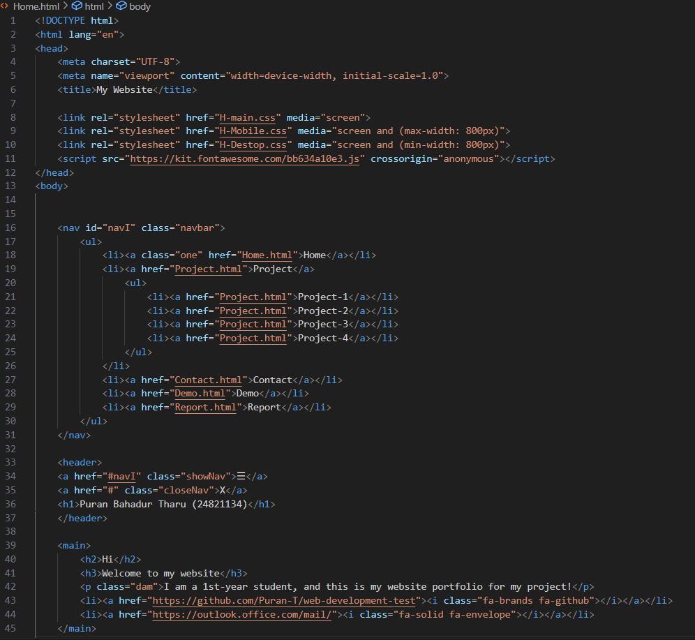
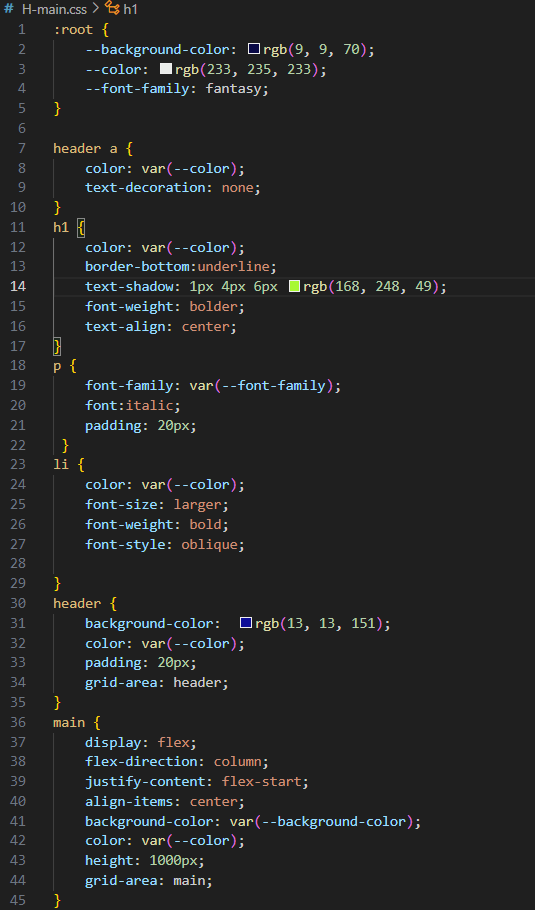
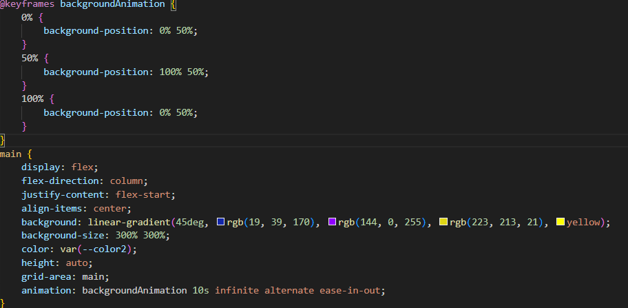

REPORT OF WEBSITE
I like to do the coding in this module because the design and adding the content in the website and how the website look like by using the HTML and CSS file. While doing the design i am very excited and search for many website design but i like the design look like simple so, is choose the Chris Rafferty website design because the website is simple and the color is attractive to the user so, i follow the instruction. This website is responsive and clean GUI which you may like it and it is easy to use for all and every one can access the link and file and every thing is available which is needed in the website the Portifolio of the website look very effective. Each page is different from each other but the background color of the website is same. This website is made for the Desktop and the Mobile user you may donot like the tab design because it is not properly setup. The humburger for the Mobile is also responsive I make the nav display-none and when the humburge is targeted then the nav is display-block i spend many time in it you can use it.
HTML
In the HTML file i added different link for the different HTML file and CSS file which help me to do code easy. I added some class to target the items and it help in the CSS code. In HTML file i link the my facebook,Github and linkedin for contact page. The body of the HTML is divided into different form like header,nav,main,aside and the footer for adding different content in specific place for access. In this website i made the 5-HTML they are HOME page, Project page, Contact page, Demo page and Report page. each page have their different content like the Home page show the description of my profile and the Contact page have the register form where you can enter your name and personal detail. The Project page have my project which i have done in the last semester you can see and read the projects. The Demo page have the video which i made of this website where i explain the website design and how it run and look in the desktop and Mobile at last this is last page Report where you are reading the reports. You can see the screenshot of the HTMl file at down.
CSS
CSS is main part of the website development because without it the content is not properly setup. To design the website CSS file is importent from the CSS we change the color of the background , font and done different things for the website. For the design the website i make 3 CSS file for each HTMl file because we have to make website use in desktop and Mobile responsive and the design. The CSS file have different work like main css file have the access of both Desktop and Mobile and the desktop and Mobile CSS have only access of their own field to show content. For changes of the desktop and the Mobile i make changes in their CSS file which make me easy to access the code and clean code. In desktop you can see the nav bar and the header main and aside at same time because the css file and place in different place because of the boby display templet which is 90%,10% for the desktop and for the Mobile the display template 100% which make easy to show in Mobile display which is small. Sometime some thing need to be hide and show in the desktop and the Mobile as and example i can take the humburge icon which is shown in the Mobile and not show in the Desktop you can see in both desktop which make different code from the desktop css and Mobile css code. you can see the screenshot of the CSS file of the page.
ANIMATION
For animation i look youtube for how to animated and color change so, i can apply in my website. After searching i found the backgrund color changing which is perfectly fit in my website which make my website attractive.You can see the background of the main page is changing the color. i implement only 4 color for the animation because the time is only 10s for the animation if the color is more than the animation is done very fast so it is not show the website good.
